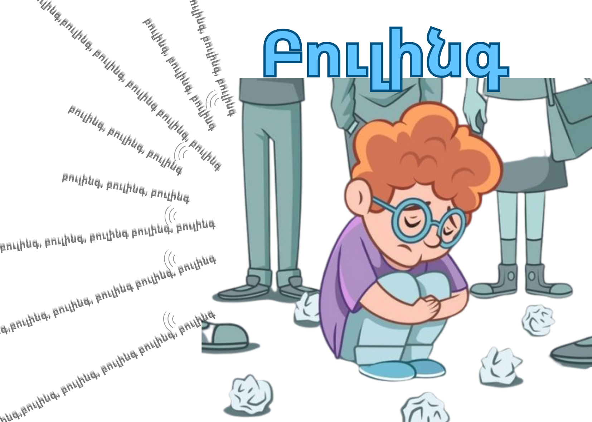

Բուլինգի թողած հետևանքները
Բուլինգը միայն ժամանակավոր տհաճություն չէ. այն թողնում է խորը և երկարատև հետքեր, որոնք կարող են անդրադառնալ մարդու ողջ կյանքի վրա:
1. Հոգեբանական հետևանքներ
Սա բուլինգի ամենավտանգավոր կողմերից մեկն է, որը հաճախ տեսանելի չէ անմիջապես.
- Ցածր ինքնագնահատական. Զոհը սկսում է թերագնահատել իրեն և հավատալ հալածողի բացասական խոսքերին:
- Տագնապ և դեպրեսիա. Մշտական վախը և լարվածությունը կարող են հանգեցնել լուրջ հոգեբանական խնդիրների:
- Մեկուսացում. Մարդը սկսում է խուսափել շփումներից՝ վախենալով նոր վիրավորանքներից:
2. Ուսումնական խնդիրներ
Բուլինգի ենթարկվող աշակերտների մոտ նկատվում են հետևյալ փոփոխությունները.
- Առաջադիմության անկում. Սթրեսի պատճառով դժվարանում է կենտրոնացումը դասերի վրա:
- Դպրոցից խուսափում. Աշակերտը հաճախ է փորձում դասերից բացակայել՝ վախենալով հանդիպել հալածողներին:
3. Ֆիզիկական հետևանքներ
- Քնի խանգարում. Անքնություն կամ մղձավանջներ:
- Առողջական գանգատներ. Սթրեսից առաջացած գլխացավեր, ստամոքսի ցավեր և ընդհանուր թուլություն:
- Վնասվածքներ. Ֆիզիկական բուլինգի դեպքում՝ կապտուկներ կամ այլ վնասվածքներ:

Ազդեցությունը հալածողի (բուլերի) վրա
Հետազոտությունները ցույց են տալիս, որ այն մարդիկ, ովքեր դպրոցում հալածում են ուրիշներին, հետագայում նույնպես ունենում են խնդիրներ. նրանք ավելի հակված են լինում օրինախախտումների և դժվարանում են կառուցել առողջ փոխհարաբերություններ: